A comprehensive study of Mixed Integer Programming with JuMP on Julia (Part 1)
Some basics of Linear/Mixed Integer Programming & How to use a heuristic callback inside a MIP solver.
Introduction
One of the primary purposes of the computer sciences and operation research is to solve problems efficiently; problem-solving is a field where we often find very “ad-hoc” methods of resolution, they can be efficient, but they rely on some specific properties of the problem which are not necessarily easy to notice.
In this series of posts, we will introduce and discover a very versatile and generic way of thinking and of solving a wide variety of problems, and this introduction will occur on three sides:
- On the theoretical view, we will investigate how Linear Programming and Mixed Integer Programming can help us in modelling big combinatorial problems.
- In the practical aspect, we will see how we can use an API to instantiate a Linear Program and exploit some of the problems we solve to improve the solving procedure's efficiency.
- And finally, from the operational perspective, we will discover a very recent, efficient and user-friendly language: Julia, and more precisely, we will discover a library: JuMP, a domain-specific modelling language for mathematical optimization.
This series of posts doesn't assume a background in Julia; I think a Python background is more than enough to understand the pieces of code I will use.
What is this post about
This post is the pilot of the series, but it will also be the starting point of it by giving you the background you will need to understand the practical techniques that can be used to solve large combinatorial problems.
It will also be the only post in which we will present a pure theoretical academic problem as an application for simplicity.
Still, if you are comfortable with mixed-integer programming, this post (and more generally this series) is a good occasion to see to use Julia and, more precisely, how to tune your exact solving procedure with some approached methods.
Smooth introduction to Linear Programming (and to Julia)
Let’s start by presenting how a linear program is structured and how a solver will perform a resolution. To do it, we will go through a simple example.
To make it visualizable, we will take an example where we will try to optimize a linear function of two variables with respect to a set of linear constraints.
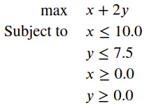
Geometrically, if we take each constraint and replace the inequality with equality, each constraint will be a line equation. This line will separate R² into two parts and invalidate one of them according to the direction of the inequality.
We will name the polyhedron delimited by the set of constraints, which is, in this case, a polytope because it’s close and bounded, the polyhedron (or the polytope) of constraints.
As a warm-up to Julia, let’s see how we can draw the polytope of constraints by using plot.jl, a “matplotlib-like” framework and the Package LinearAlgebra is similar to NumPy.
First, we use Pkg, which is the built-in package manager of Julia, to add the required Packages,
using Pkg;Pkg.add("LinearAlgebra");Pkg.add("Plots");Pkg.add("PyPlot");
After adding them, we can import them.
using LinearAlgebrausing Plotspyplot()
The last line aims to complete some package plot functionalities for visualization (check the doc here for more details).
An easy way to draw any function is to sample points and compute the associated images, and this can be done in Julia the following way :
x\_v = LinRange(-2,15,100)plot([x\_v], [x\_v .+ 7.5], label ="Y=x + 7.5")plot!([x\_v], [-2x\_v .+ 20], label ="Y= -2x + 20")
The first line will sample 100 points from the interval [-2, 15]; a part of this; you have several things to notice :
- “plot” is used to create a line plot and plot! update a created plot.
- “.+” is the element-wise equivalent of the vector addition.
- Julia is so handy that omitting the “*” between a coefficient and a variable is possible even with a vector.
These lines will produce the following plot :
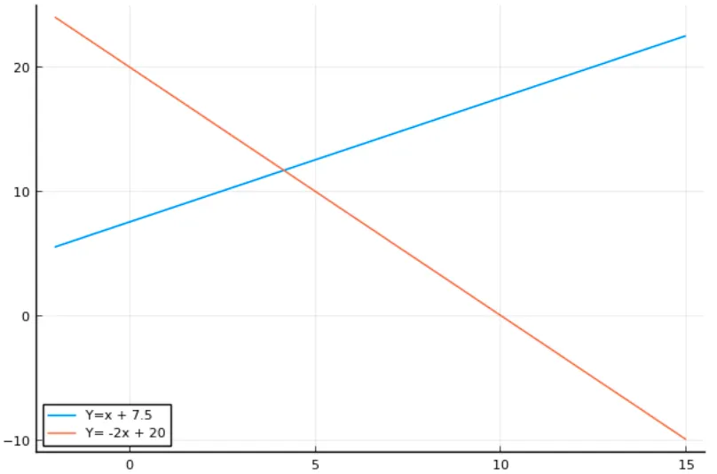
and now let’s print the polytope of constraints :
x\_v = LinRange(-2,15,100)y\_v = LinRange(-2,15,100)plot([0\*x\_v], [y\_v],label ="Y Axis")plot!([x\_v], [0\*x\_v],label ="X Axis")plot!([x\_v], [0\*x\_v .+ 7.5], label ="Y=7.5")plot!([0\*x\_v .+ 10], [y\_v],label ="X=10")plot!(title = "Polytop of Constraints")
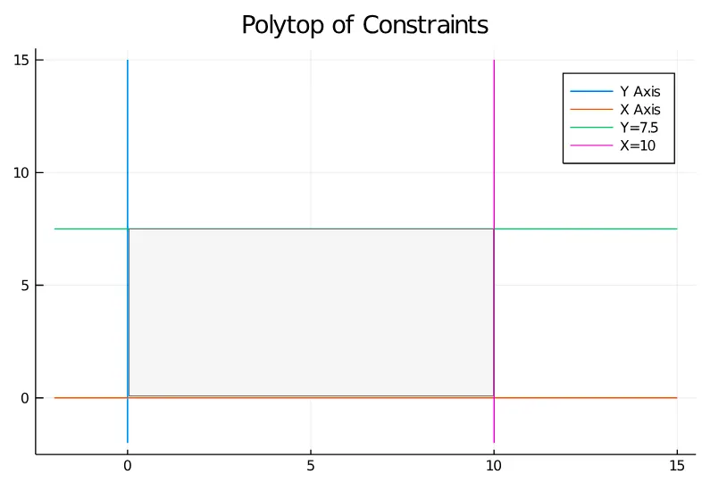
The grey area I added to the plot represents the space's portion, which satisfies the problem's constraints.
Now let’s focus on the objective function by looking at the vector (1,2), representing the gradient of the linear function x+2y.
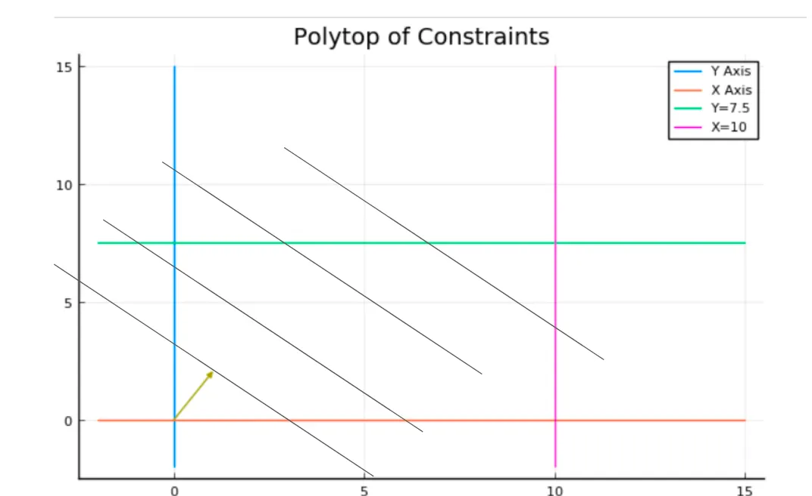
Each line I added represents a line of points with the same value. The further you go in the gradient direction, the bigger the objective value becomes.
We can visually conclude that the best solution is at the intersection of the green and the pink line, so let’s see if we find this result using JuMP.
The traditional add/import lines (we will use GLPK as a solver, but nothing is dependant on it).
Pkg.add("JuMP")Pkg.add("GLPK")using JuMPusing GLPK
Now we declare our model and set the optimizer from GLPK:
prgrm = Model()set\_optimizer(prgrm, GLPK.Optimizer)
We add the variables and precise their scope; by default, the variables are continuous :
@variable(prgrm, 0<=x)@variable(prgrm, 0<=y)
Now we create and add the two remaining constraints; the first two are in the scope of the variables;
@constraint(prgrm, x <= 10)@constraint(prgrm, y <= 7.5)
Finally, we add the objective function and precise sense of optimization, which will be, in this case, a maximization :
@objective(prgrm, Max, x+2y)
One interesting feature of JuMP and especially when using it with Jupyter-notebook is that we can print the program as easily as the content of any variable, which gives us the following output :

And now solving it is as easy to say as it is to do :
optimize!(prgrm)
After that, we can access the values of the variables after optimization like this:
value.(x)value.(y)
And so one we can update our precedent plot to confirm our graphical resolution with the line :
plot!([value.(x)], [value.(y)], seriestype = :scatter, label="Optimum")
This gives us :
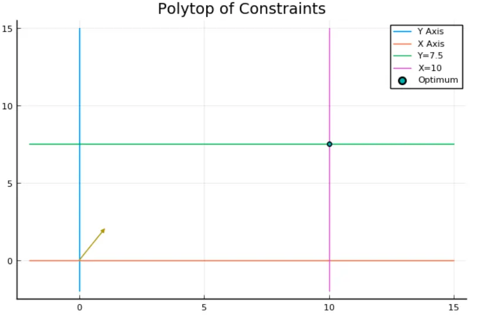
The Simplex principle
Solving a linear program is done with the Simplex algorithm, which works because of a simple but important principle :
Optimizing a linear function on a polytope (or more generally a compact convex space) always leads us to a vertex (more generally an extreme point).
The simplex algorithm is a local search procedure that walks from a vertex to another to increase the objective function's value until we reach a vertex where every neighbour has an inferior value.
Since the vertex where the optimization ends depends only on the objective function, we can try to find an objective function for each polytope vertex.
For example, in the following polytope (Note that we added a constraint to increase the number of vertex of the polytope)
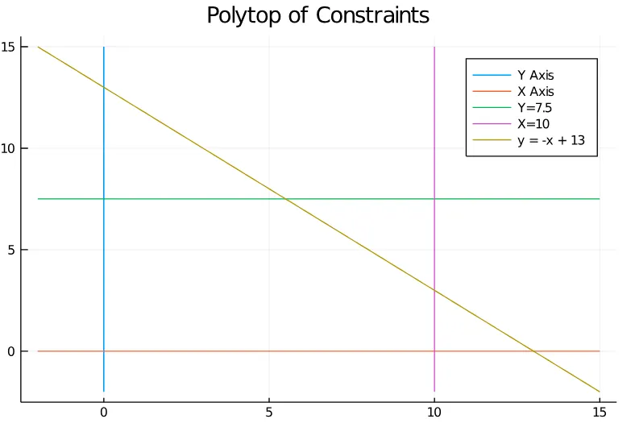
We can obtain any of the vertices by optimizing in different directions.
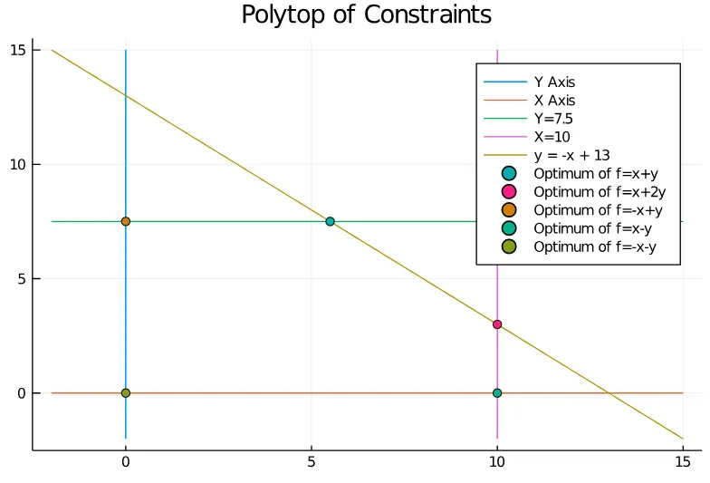
From Continuous to Integer variables: The Branch-and-Bound Method
Even if it’s not totally how a solver works, the first thing you have to understand to assimilate how Mixed Integer Programming works is the Branch and Bound method.
Let’s take the precedent example but restricting our variables to integers; the feasible region is no longer the grey area inside the polytope. Still, we can compute the feasible integer points, which give us the following figure :
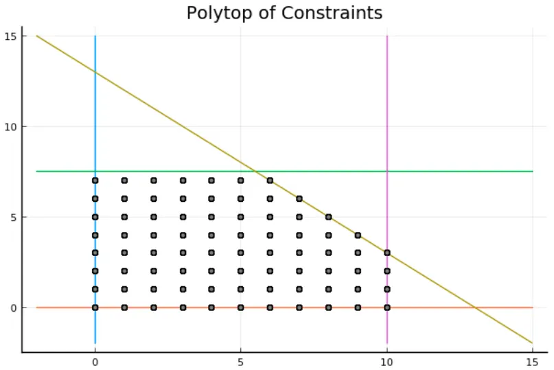
In grey, we can see the feasible solutions, and the first thing we can notice is that some vertices are in the integer solutions and some not, and this distinction is crucial, but we will get back to this point later.
The branch and bound procedure create a tree called “enumeration tree”; in each node, it constructs a mixed-integer program and solves its “linear relaxation” with the simplex algorithm, which means the same program after ignoring integrality constraint, from this point on, there are two possible outcomes :
- The solution is integer feasible, and therefore we stop the resolution.
This can happen if the polytope of constraints has integer vertices. For instance, if we solve the LP relaxation of the precedent mixed-integer program with the objective function 2x+y, we will find (10,3), which is an integer solution.
- The solution is “fractional”, and therefore we need to branch.
And this will happen in the precedent polytope if we try to optimize the function x+2y,

Now, let’s see how we can handle this case.
Branching :
Branching refers to creating child nodes in the enumeration tree; these children are the same problem but solved on two partitions of the feasible space.
These two partitions are obtained by adding a branching constraint.
Since an example is worth a thousand words, for the precedent fractional solution, which was (5.5, 7.5), we can choose which variable we can branch on if we had an integer and a fractional component in our solution, we should have branched on the fractional one, let’s say, we will branch on x, so we add one constraint in each child node,
- The first child node will have the constraint x ≤ 5
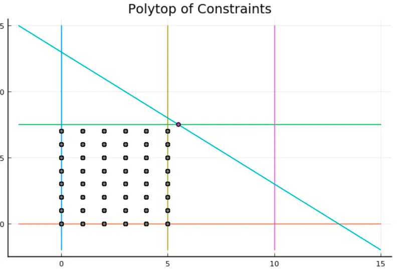
- The second one will inherit the constraint x≥6
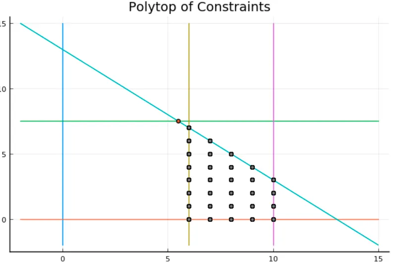
As you can notice, the aim of these constraints is, in each case, to exclude or to cut the fractional solution (you will discover why it’s in bold in another part of this series :) )
This last child’s relaxation give’s us the following solution.

The solution in red is : (6.0, 7.0) an integer feasible solution.
And so, are we done? Well.. not really.
Let’s review our enumeration tree.
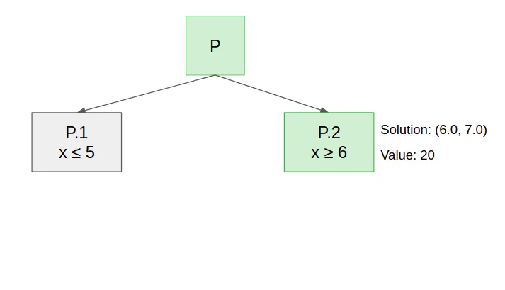
As we can see, we solved only two of the 3 nodes of the tree; then, we have to solve P.1’s Linear Relaxation.
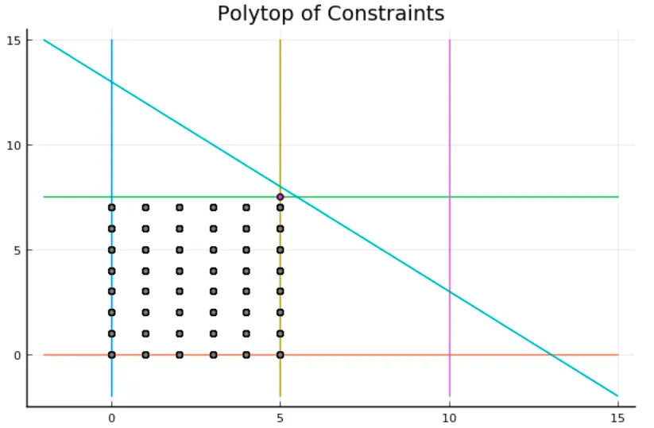
The relaxation gives us a fractional solution : (5.0, 7.5) which means the enumeration tree would become like this if we branch on y.
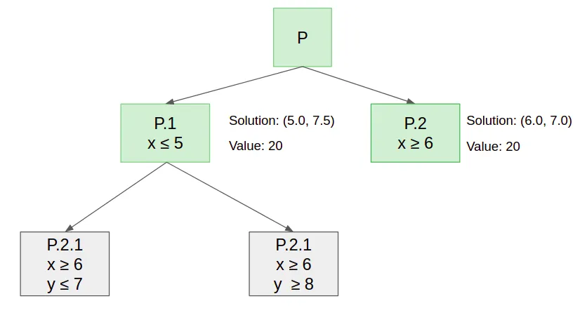
Why am I saying would? Well, the algorithm’s name is Brand-and-Bound, and until now, we just branched, so now we will see how we can bound.
Bounding :
The bounding or “probing” procedure consists of removing a branch of the tree provided that we have a superior bound (for maximization) of the values we can find in it.
To have this upper bound, we will introduce another intuitive and important principle :
The value of an LP’s relaxation is an upper bound on it’s value.
It’s intuitive because the feasible region of the relaxation contains the original program's feasible region.
So when we solved P.1 and obtain a fractional solution whose value is 20, we are sure that in the sub-tree whose root is P.1, we won't find any solution with a value above 20 and since we already have an integer solution whose value is 20 we can probe this part of the tree, and after that, we are done.
Using the solver to do all this automatically :
The first question you should all have in mind is: “Am I going to do all this every time I have to solve a MIP ? ” and the answer is, of course, no, I have to precise that the variables are integers and the solver will do this job (among other things) for us.
@variable(prgrm, 0<=x, Int)@variable(prgrm, 0<=y, Int)
But the most attentive among you are certainly wondering what if the solver, when constructing the enumeration tree, had started with the other child who doesn't give us instantly an integer solution?
This raises many questions about how to branch and how to explore the enumeration tree, but the principal thing you may focus on is that.
The sooner we obtain an integer solution, the best it is to prune subtrees.
But since the solver is doing this internally, what is the purpose of understanding this point (and of all this part)? this is what we will see in the following :)
Using self-made heuristics inside a solver
In many large combinatorial problems, the solver may not find an integer solution, so its enumeration tree keeps growing exponentially.
Fortunately, many combinatorial problems have simple (often greedy) heuristics that compute quickly a feasible solution which is consequently an integer solution.
The solvers who are generally used gives us an interface to compute and submit heuristic solutions; this aims to give the algorithm an integer solution to enforce the probing.
Let’s try to apply this to a very classical example: The Vertex Cover Problem.
A vertex cover V’ of an undirected graph G=(V,E),is a set of vertices that includes at least one endpoint of every edge of the graph, often we are interested in finding the smallest vertex cover.
Formulating the Input Data
The first question we have to think about is “How are we going to represent an instance of the problem ?”, to answer this question, let’s take an example.
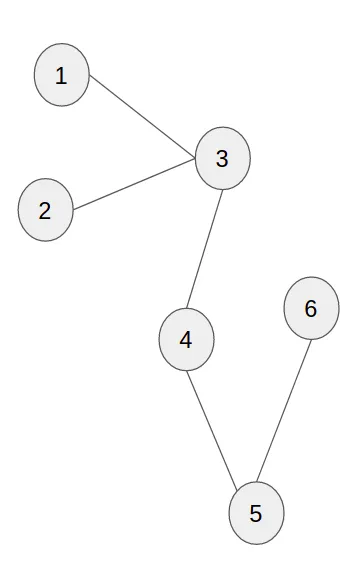
Since the edges are not weighted, we can represent the problem with an adjacency matrix of shape (n,n) where n is the number of nodes.
So, for instance, the precedent graph is encoded in the following matrix :
ADJ\_MAT = [[0 , 0 , 1, 0, 0, 0],[0 , 0 , 1, 0, 0, 0],[1 , 1 , 0, 1, 0, 0],[0 , 0 , 1, 0, 1, 0],[0 , 0 , 0, 1, 0, 1],[0 , 0 , 0, 0, 1, 0],]
(Now, I advise you to stop reading and to try to write the MIP formulation for the Vertex Cover Problem to check your understanding)
Now let’s think about the formulation we are going to use :
- What are the decision variables?
We are trying to decide for each vertex if we take it or not in the cover, so we have n binary variables, indicating whether we take the corresponding vertex.
We can create the variables as follows:
#WARNING : Everything on Julia is indexed by default starting from #1.n = size(ADJ\_MAT)[1]#We create a vector of variables indexed by 1 prefixed by x (x1, x2, ..., xn)@variable(prgrm2, 0<=x[1:n], Int)
- What are the constraints?
A feasible solution must cover each edge, so we have to take one vertex or the other (or both) for each edge.
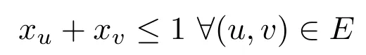
These constraints can be created simply like this :
for i in 1:nfor j in 1:nif(ADJ\_MAT[i,j] == 1)c =@constraint(prgrm2, x[i] + x[j] >= 1)set\_name(c,"C")println(c)endendend
- What are we optimising?
The objective is to minimise the number of vertices we take in the cover:
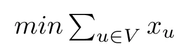
which can be generated like this :
@objective(prgrm2, Min, sum(x))#Output : 𝑥1+𝑥2+𝑥3+𝑥4+𝑥5+𝑥6
So the MIP formulation is the following:
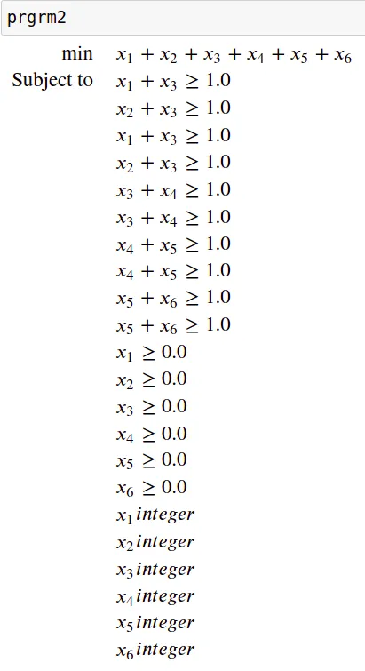
Which gives the following solution :
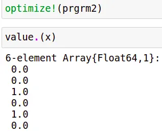
Which can be interpreted as follows:
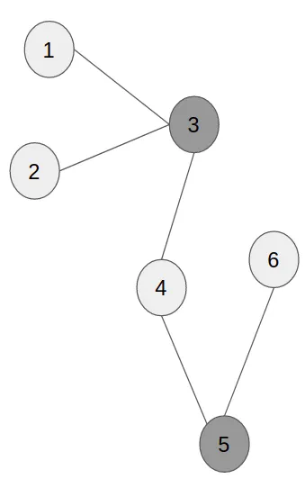
Approximated resolution of the vertex cover problem
In this part, I will present two ways of computing a feasible solution for the vertex cover problem; these two algorithms have a fascinating property: approximations with a performance guarantee.
Greedy algorithm :
This algorithm consists of taking each edge both endpoints and removing all the covered edges at each step.
The greedy algorithm is a 2-approximation which means it never return a solution that is more than two times worst than the optimal.
The proof is straightforward once you notice that you take two vertexes where one would have been enough in the worst case.
Rounding up a fractional solution:
The vertex cover problem has another interesting property: it’s a “half-integral problem”, which means that even in its relaxation, the variables are 0 or 1 or 1/2.
Another way of getting an approximation of the solution is to round up a fractional solution by turning the 1/2 to ones, which will give us a feasible solution because the fractional was already fulfilling the constraints, and we increased some of its variables.
(for the full proofs of the validity of the two approaches, you can read this course)
Heuristic Callback on JuMP
Now, how can we tell our solver to call a heuristic at each fractional node?
To do so, you have to understand 3 things:
- How can you get the solver's current solution values in the Callback?
- How can you submit your heuristic solution after constructing it from the Callback?
- How can you register your Callback so that the solver will use it?
And I will explain to you each of these aspects in the following example of using the round-up approximation :
The first step you have to design your callback; inside your callback, you can use two methods :
- callback_value(cb_data, x) to get from the callback data the value of a variable (and only one at a time).
- MOI.submit( model, MOI.HeuristicSolution(cb_data), [x], [v] ) : this method submit the solution x=v and returns the status of the solution which can either be “accepted” “rejected” (by the solver) or “unknown”.
So for our round-up approximation, here is the callback we propose :
function my\_callback\_function(cb\_data)println("Call to callback")new\_sol = []precedent = [callback\_value(cb\_data,x\_k ) for x\_k in x]for x\_i in xx\_val = callback\_value(cb\_data, x\_i)x\_new = ceil(Int, x\_val)append!(new\_sol, x\_new)endprintln("Precedent: ", precedent)println("New: ",new\_sol)status = MOI.submit(mod, MOI.HeuristicSolution(cb\_data), [x\_i for x\_i in x], [floor(Int, k) for k in new\_sol])println("status = ", status)end
I added the print statements to track the calls to the heuristic.
Now we register our callback :
MOI.set(mod, MOI.HeuristicCallback(), my\_callback\_function)
So when executing the optimization step, we can see this :
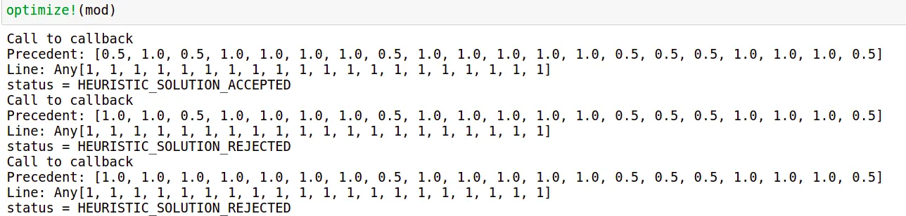
The rejected solutions after the first are because the rounding up procedure is quickly not sufficient in terms of efficiency to beat the integer solutions produced by the solver, so the solutions it proposes are rejected, but still, it was useful in the first iterations.
Conclusion
When you design a solution, you have to choose between an exact or an approached solution. Still, as we saw, provided a good intuition on the specific problem you want to solve and a good understanding of a solver's internal behaviour, we can get the best of both worlds.
A special thanks to Pr Pierre Fouillhoux, who enlightened us and helped us better understand this field's depth and appreciate all the nuance of it. Of course, s/o my mate
who helped me write and code the content of this article.